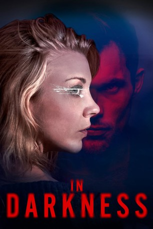

#9888 In Darkness
 
 IMDB-Wertung: 5.7 / 10
IMDB-Wertung: 5.7 / 10  Tomatometer: 44
Tomatometer: 44  Metascore: 59
Metascore: 59 
In Darkness – in Dunkelheit – lebt eine Musikerin aus London schon lange, denn sie ist blind. Zum Problem wird ihre Sehbehinderung allerdings erst, als die junge Frau mit anhören muss, wie im Apartment über ihr ein Mord verübt wird. Die Tat bewirkt, dass sie in Londons gewalttätige Unterwelt abtaucht – doch wie sich herausstellt, hat auch sie Rachepläne, die sie noch verwirklichen will.
Jahr: 2018
Dauer: 101 Minuten
FSK:
Land: England Studio: Vertical EntertainmentTonspuren: DD5.1 - ,
Untertitel: Deutsch, Englisch,
Auflösung: 1080p (1920x800) Größe: 6993 MB
Genre: Thriller, Mystery
Regisseur: Anthony Byrne
Drehbuch: Anthony Byrne, Natalie Dormer
Soundtrack: Niall Byrne
Darsteller:
 Natalie Dormer als Sofia
Natalie Dormer als Sofia Emily Ratajkowski als Veronique
Emily Ratajkowski als Veronique James Cosmo als Niall
James Cosmo als Niall Ed Skrein als Marc
Ed Skrein als Marc Joely Richardson als Alex
Joely Richardson als Alex Neil Maskell als Mills
Neil Maskell als Mills- Amber Anderson als Jane
 Jan Bijvoet als Radic
Jan Bijvoet als Radic Bern Collaço als Gala Guest
Bern Collaço als Gala Guest- Lexie Benbow-Hart als Young Sofia
 Daniel Eghan als Police Officer
Daniel Eghan als Police Officer Olegar Fedoro als Orthodox Priest
Olegar Fedoro als Orthodox Priest- Stefan Kopiecki als Mourner
- Renars Latkovskis als Russian Kidnapper 2
- Jem Kai Olsen als Radic's Bodyguard
- Andrius Davidenas als Russian Kidnapper
- Tracy Anne Green als WPC Sharon
- Srbo Markovic als Goran
- Fatah Ghedi als Protester
 Ross Carter als Hospital Staff (uncredited)
Ross Carter als Hospital Staff (uncredited)- Kim Adis als Protester
- Sofia Barclay als WPC 2
- Michael Bott als The Composer
 Anick Wiget als Mourner
Anick Wiget als Mourner- Cyrille Mansuy als Motorcycle passenger
- Matt Sapsford als Police Officer
- Chelsea O'Connor als Protester
- Isabella Ayriss als Sister
- Robert Benedetti-Hall als Punter on Train
- Michael Thyx als Morgue Technician
Datei: X:\2018(G-M)\In Darkness (2018, FSK, 1920x800).mkv seit 08.11.2018
Festplatte: HD 2018(G-Z)-2019(A-Z)
 Es gibt insgesamt 138 Filme in der Gruppe '2018(G-M)'
Es gibt insgesamt 138 Filme in der Gruppe '2018(G-M)'